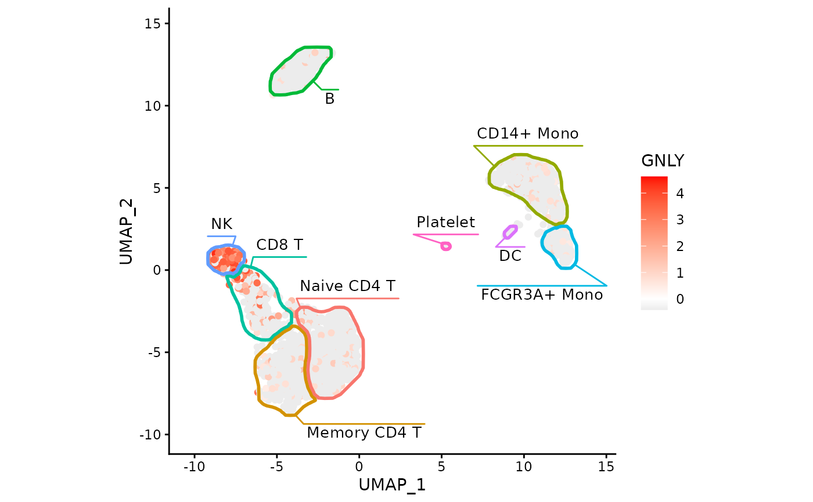

Convenience helper that returns a list of ggplot2 components
that draws polygon-like outlines and
places cluster labels.
The plotting limits are expanded (via limits.expand) to provide
extra room for labels.
Arguments
- maskTable
A data.frame of mask coordinates. The first two columns are interpreted as x/y coordinates (in that order). Must contain at least the columns
cluster(a factor) andgroup(grouping identifier passed togeom_mark_shape()).- ratio
Optional aspect ratio passed to
ggplot2::coord_cartesian(). Use1for equal scaling. Default isNULL(no fixed ratio).- limits.expand
Numeric scalar giving the fraction of the x/y range to expand on both sides when setting plot limits. Default is
0.1.- linewidth
Line width passed to
geom_mark_shape()for the outline. Default is1.- shape.expand
Expansion or contraction applied to the marked shapes, passed to
geom_mark_shape(expand = ...). Default isunit(-1, "pt").- label.fontsize
Label font size passed to
geom_mark_shape(). Default is10.- label.buffer
Label buffer distance passed to
geom_mark_shape(). Default isunit(0, "cm").- label.fontface
Label font face passed to
geom_mark_shape(). Default is"plain".- label.margin
Label margin passed to
geom_mark_shape(). Default ismargin(2, 2, 2, 2, "pt").
Value
A list of ggplot2 components suitable for adding to a plot with +,
containing:
a
ggplot2::coord_cartesian()specification, anda
geom_mark_shape()layer.
Details
The first two columns of maskTable are used as x/y coordinates. Cluster
labels are taken from maskTable$cluster. Shapes are grouped by
maskTable$group.
Examples
data("exampleMascarade")
maskTable <- generateMask(dims=exampleMascarade$dims,
clusters=exampleMascarade$clusters)
library(ggplot2)
ggplot(do.call(cbind, exampleMascarade)) +
geom_point(aes(x=UMAP_1, y=UMAP_2, color=GNLY)) +
fancyMask(maskTable, ratio=1) +
theme_classic()
